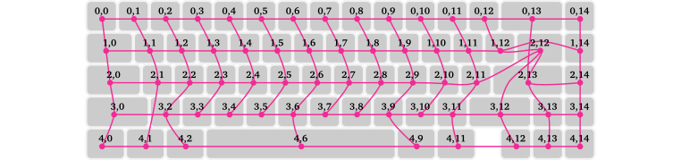

Developing QMK features
Pascal Getreuer, 2023-12-17 (updated 2025-07-05)
Overview
The QMK features on this site are community modules, reusable C libraries for adding some behavior to a keymap. Custom shift keys and Achordion are examples. The point of wrapping up a feature as a module is to make it reusable across different keymaps and to encapsulate implementation details so as to avoid cluttering the keymap. A few of these features have also been integrated into QMK itself as core features. We discuss both kinds of feature implementations here.
License
Code snippets in this post are shared under Apache 2 license.
Copyright 2023-2025 Google LLC
Licensed under the Apache License, Version 2.0 (the “License”); you may not use this file except in compliance with the License. You may obtain a copy of the License at
https://www.apache.org/licenses/LICENSE-2.0
Unless required by applicable law or agreed to in writing, software distributed under the License is distributed on an “AS IS” BASIS, WITHOUT WARRANTIES OR CONDITIONS OF ANY KIND, either express or implied. See the License for the specific language governing permissions and limitations under the License.
Authoring modules
Community Modules
is the recommended approach to developing third-party QMK features. The
structure of module <name> is a folder
<name> with the following contents:
qmk_module.json: module metadata (required).<name>.c: the main implementation.README.md: module documentation.introspection.h: header automatically included in the user’skeymap.c.introspection.c: source code automatically appended to the user’skeymap.c.config.h: additional config definitions.rules.mk: additional Makefile build definitions.
Only qmk_module.json is required, the other files may be
included as needed. The <name>.c file is
automatically linked in the build. If you want to compile other
.c files, these need to be added with
“SRCS += filename.c” in rules.mk.
The modules framework enables the module to hook into many of QMK’s
APIs in a pattern similar to the _user callbacks. A few
significant hooks (see the
documentation for a full list):
If the module processes key events, do so with
process_record_<name>(). The function signature is the same asprocess_record_user():bool process_record_<name>(uint16_t keycode, keyrecord_t* record);For module “housekeeping” tasks that run continuously, define it in:
void housekeeping_task_<name>(void);To run module code immediately after initialization:
void keyboard_post_init_<name>(void);
Hooks may be defined in <name>.c or any other
.c file that you have linked in the build.
Modules are not limited to these hooks. As needed, you can define any
functions or types as a C library generally would, and users may use
them in their keymap.c. As is good C practice generally,
work the feature <name> into the naming of every
publicly visible function, preprocessor option, etc. to avoid name
collisions.
Module skeleton
To get started, here is a skeleton definition for a cool module.
description cool/cool.c
#include "quantum.h"
bool process_record_cool(uint16_t keycode, keyrecord_t* record) {
switch (keycode) {
case COOLKEY:
// Do something cool...
break;
}
}
void housekeeping_task_cool(void) {
// Do something cool...
}Note the line #include "quantum.h" at the top of
cool.c: this gives the module implementation access to
QMK’s definitions and APIs. Like the rest of QMK, module code should
target C11 and may make use GNU extensions (see What is this
weird C syntax).
description cool/qmk_module.json
{
"module_name": "Cool",
"maintainer": "authorname",
"license": "Apache-2.0",
"url": "https://cool.project.url",
"keycodes": [
{ "key": "COOLKEY" }
]
}The qmk_module.json file must at least define
module_name and maintainer. It may optionally
declare one or more keycodes. See the
documentation for description of further fields.
description cool/README.md
# Cool
This QMK community module implements a cool feature...
This module is licensed under the Apache License 2.0. See the LICENSE file
for details.
## Keycodes
| Keycode | Description |
|-----------|-----------------------------------|
| `COOLKEY` | Does something cool. |
## Configuration options
* Some option.
* More options...The README.md is written in markdown syntax (GitHub-flavored markdown to be
precise, if you plan to publish on GitHub).
To enable others to share your module, specify an open source license. The above uses the Apache 2.0 license as an example. Here is the LICENSE file for Apache 2.0 to include with the module. Or see choose an open source license for a guide on other options.
User instructions
Users will need to complete a couple steps to use the feature in their keymap.
Step 1. Download the module and put it under the
modules directory of qmk_firmware or of a QMK
userspace directory. The installed directory structure is like this:
<QMK_FIRMWARE or QMK_USERSPACE>
└── modules
└── authorname
├── cool
└── (other modules...)Step 2. Add the module to keymap.json. Add the
module to keymap.json
{
"modules": ["authorname/cool"]
}See this page for further description of how to use modules.
QMK core features
A QMK core feature is part of QMK itself. Examples include the items listed under the “Advanced keycodes” and “Software features” sections of QMK’s documentation. Implementation of core features follows similar patterns as those described in the previous section. For example, you can see how Repeat Key was added as a core feature in this pull request.
How to contribute a core feature
The following is an outline for how one might add a new core feature to QMK:
Discussion: Submit a feature request or start a thread on the r/olkb subreddit or on Discord to scope out interest.
Module prototype: Develop the feature initially as a module, if feasible, and share it with others. This is a great way to experiment and get early feedback.
Move to core: Refactor the feature as a core QMK feature on your local copy of the qmk_firmware repo. Write documentation (docs/) and unit tests (tests/). Check how the feature operates when used in combination with other features.
Pull request (PR): Read Contributing to QMK and QMK’s PR checklist. Submit a PR to merge into the
developbranch. Be patient. Review often takes a few months.Release: Breaking changes, including any new core features, are made first on
develop, then released four times a year whendevelopis merged intomaster.
It is essential that QMK users be able to rely on their keyboards. New core features are reviewed and accepted at a cautious pace. The full outline above might realistically take 6–12 months depending on the feature’s complexity and reviewer availability.
Past feature PRs
It is enormously helpful to look at the PRs for existing features to see how things are done. An incomplete list:
- #25125 – Flow Tap
- #24560 – Chordal Hold
- #21881 – PDF(layer) switch
- #19795 – Tri Layer
- #19700 – Repeat Key
- #18463 – OS Detection
- #16588 – Caps Word
- #15699 – Autocorrect
- #12851 – Digitizer support
- #11422 – Key Overrides
- #11036 – Dynamic Tapping Term
- #10174 – Quantum Painter
- #6739 – Mouse Keys Kinetic Mode
- #671 – Swap Hands
- #451 – Tap Dance
Exposing options
Most features involve some options. Avoid baked-in assumptions about the keymap’s custom keycodes, etc., which would curtail reusability. Instead, expose options to let the user configure such things. Here are some common patterns to do that.
Preprocessor constants
Let the user #define options in their config.h:
// In config.h
#define COOL_TIMEOUT_MS 5000
// In cool/cool.c
#ifdef COOL_TIMEOUT_MS
// Timeout logic...
#endif // COOL_TIMEOUT_MSThis fits well for boolean enabled/disabled options as well as timeouts and other numeric options. For a real example, see for instance Caps Word’s CAPS_WORD_INVERT_ON_SHIFT (boolean) and CAPS_WORD_IDLE_TIMEOUT (numeric).
Preprocessor options can also be used for lists of values:
// In config.h
#define COOL_SEQUENCE {3, 1, 4, 1, 5, 9}
// In cool/cool.c
static uint8_t sequence[] = COOL_SEQUENCE;The Unicode feature’s UNICODE_SELECTED_MODES and Secure feature’s SECURE_UNLOCK_SEQUENCE work this way.
Callbacks
Let the user define a callback for deeper customization:
// In cool/introspection.h
// Defines whether Cool feature is enabled for `keycode`.
bool cool_enabled_for_key(uint16_t keycode);
// In cool/cool.c
__attribute__((weak)) bool cool_enabled_for_key(uint16_t keycode) {
return true; // By default, enable for all keys.
}
// In keymap.c
bool cool_enabled_for_key(uint16_t keycode) {
// User's implemention, overrides the default implemention...
}The __attribute__((weak)) syntax in cool.c
is a GNU extension annotating the definition as a weak symbol. This
allows us to make a default definition of the callback that the user may
optionally override by making their own redefinition in
keymap.c.
Callbacks are useful to customize per-key behavior, like Caps Word’s caps_word_press_user() to define which keycodes are word breaking. Callbacks can also enable the user to react to feature events, like Caps Word’s caps_word_set_user() to react to when Caps Word turns on or off.
Diagnostics
It is a fact of engineering life that fixing bugs is an expected part of development. This section describes methods for outputting debug messages.
Debug console
QMK has a Console feature to output debug information, which can be extremely helpful. How to use it:
Enable it by adding in rules.mk:
CONSOLE_ENABLE = yesAdd a
DB_TOGGkey to your keymap to enable debug mode.To print your own console messages, add
#include "print.h"at the top of keymap.c and print formatted messages with
dprintf("%s string", var);Note that this API does not support all the format specifiers of standard
printf(). For instance, uppercase hex%04Xworks, but lowercase%04xdoes not.Software is needed on the host computer to listen for the console messages. Use either the QMK Toolbox, the qmk console command, or hid_listen. Getting the listening software to recognize the device is finicky and may require system configuration. See the Console documentation for troubleshooting suggestions.
Press
DB_TOGG. This should show a message “DEBUG: enabled” and begin displaying yourdprintf()messages.
Alternative: typing out debug messages
If you can’t (or don’t want) to use Console, a primitive alternative
is to type out messages with send_string(). An easy way to
do that is in combination with snprintf():
// Type the HSV coordinates for the current RGB matrix color.
char buffer[20];
snprintf(buffer, sizeof(buffer),
"HSV: " PRIu8 ", " PRIu8 ", " PRIu8,
rgb_matrix_get_hue(),
rgb_matrix_get_sat(),
rgb_matrix_get_val());
send_string(buffer);Beware though that snprintf() (and
sprintf()) adds a couple kilobytes to the firmware size. If
this is a problem, use the following to cheaply type formatted
strings:
// Type uint8_t value in decimal format.
send_string(get_u8_str(x, ' '));
// Type uint16_t value in decimal format.
send_string(get_u16_str(y, ' '));
// Type uint8_t value in hex format.
send_byte(x);
// Type uint16_t value in hex format.
send_word(y);
// Type uint32_t value in hex format.
send_dword(z);The above example could be reimplemented as:
// Type the HSV coordinates for the current RGB matrix color.
SEND_STRING("HSV: ");
send_string(get_u8_str(rgb_matrix_get_hue(), ' '));
SEND_STRING(", ");
send_string(get_u8_str(rgb_matrix_get_sat(), ' '));
SEND_STRING(", ");
send_string(get_u8_str(rgb_matrix_get_val(), ' '));Logging keycodes
A simple way to log keycodes is numerically as hex values:
dprintf("kc=0x%04X\n", keycode);From there, you may look up a numerical code in quantum/keycodes.h to determine its meaning. However, this process is manual and tiresome, especially for compound keycodes like tap-hold keys.
Use my keycode_string function for prettier keycode logging:
dprintf("kc=%s\n", keycode_string(keycode));This logs the keycode as a human-readable string like
“LT(2,KC_D)” rather than a hex code like
“0x4207.” See the keycode_string documentation for
further details.
Corresponding physical keys to matrix positions
We look at corresponding physical keys to matrix positions to demonstrate the above debug messaging techniques.
Each key has a key position, a row and column in the matrix
circuit. Given the keyrecord_t for an event, the key
position that generated the event is under .event.key.row,
.event.key.col. The size of the matrix is
MATRIX_ROWS and MATRIX_COLS, which is often
defined in config.h under the keyboard folder.
The correspondence between physical keys and the matrix is not always
obvious. One way to uncover it is by looking up the definition of the
“LAYOUT” macro for the keyboard, in which the arg names are
often named like “Krowcol.” For example, the
Auorora65 keyboard has the following LAYOUT macro (from keyboards/aurora65/aurora65.h):
#define LAYOUT_65_ansi_blocker( \
K00, K01, K02, K03, K04, K05, K06, K07, K08, K09, K0A, K0B, K0C, K0D, K0E,\
K10, K11, K12, K13, K14, K15, K16, K17, K18, K19, K1A, K1B, K1C, K2C, K1E,\
K20, K21, K22, K23, K24, K25, K26, K27, K28, K29, K2A, K2B, K2D, K2E,\
K30, K32, K33, K34, K35, K36, K37, K38, K39, K3A, K3B, K3C, K3D, K3E,\
K40, K41, K42, K46, K49, K4B, K4C, K4D, K4E \
)Below is a graphical representation. Note the unused matrix positions and irregularities around wide keys:

Split keyboards define a matrix in which the first N rows are the left hand and the following N rows are the right hand. Thumb clusters can get complicated. Here is the 10×6 matrix for the Charybdis:
One way to work out the matrix correspondence is to print matrix
positions to the debug console (see also Which
matrix position is this keypress?). Enable Console as described
above and add in process_record_user():
bool process_record_user(uint16_t keycode, keyrecord_t *record) {
if (record->event.pressed) {
// On every key press, print the event's keycode and matrix position.
dprintf("kc=0x%04X, row=%2u, col=%2u\n",
keycode, record->event.key.row, record->event.key.col);
}
// ...
return true;
}Alternatively, here is another way that works without Console. In
keymap.c, add a custom keycode INSPECT, use it somewhere in
your layout, and add a handler for it in
process_record_user() as follows:
enum custom_keycodes { INSPECT = SAFE_RANGE, /* ... */ };
// Use INSPECT in your layout...
bool process_record_user(uint16_t keycode, keyrecord_t* record) {
if (record->event.pressed) {
static uint16_t prev_keycode = KC_NO;
static keypos_t prev_pos = {0, 0};
if (keycode == INSPECT) {
SEND_STRING("kc=0x"); // Print info about the previous key.
send_word(prev_keycode);
SEND_STRING(", row=");
send_string(get_u8_str(prev_pos.row, ' '));
SEND_STRING(", col=");
send_string(get_u8_str(prev_pos.col, ' '));
}
prev_keycode = keycode;
prev_pos = record->event.key;
}
// ...
return true;
}The INSPECT key types out the keycode and position of
the previous key. Tapping for instance the W key and then
INSPECT prints out
kc=0x001a, row= 1, col= 2Closing
Do you need help getting something to work? Do you have a custom QMK feature or an idea for one that you want to share? Reach out on the r/olkb subreddit or Discord.